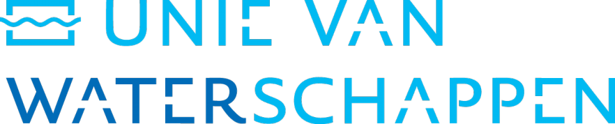

Urban Deltas
Wonderbaarlijke stedelijke ontwikkelingen op laaggelegen land
Over Project Wereldwateren
Project Wereldwateren is een onderzoeksproject naar wereldwijde wateren en waterwerken vanuit de Unie van Waterschappen.
lees meerLees ons Tijdschrift
Lees hier de nieuwste editie van tijdschrift Het Waterschap.
 lees 'm hier
lees 'm hier
Dit project is in samenwerking met Rijkswaterstaat tot stand gebracht en ontwikkeld.


©
Deze website is mogelijk gemaakt door de Unie van Waterschappen, i.s.m. Rijkswaterstaat.
Urban Deltas
Wonderbaarlijke stedelijke ontwikkelingen op laaggelegen land
Over Project Wereldwateren
Project Wereldwateren is een onderzoeksproject naar wereldwijde wateren en waterwerken vanuit de Unie van Waterschappen.
Uitgelicht:
De Elbe Estuarium
Fraser River Delta
Bekijk andere delta's
Lees ons Tijdschrift
Lees hier de nieuwste editie van tijdschrift Het Waterschap.
©
Deze website is mogelijk gemaakt door de Unie van Waterschappen, i.s.m. Rijkswaterstaat.